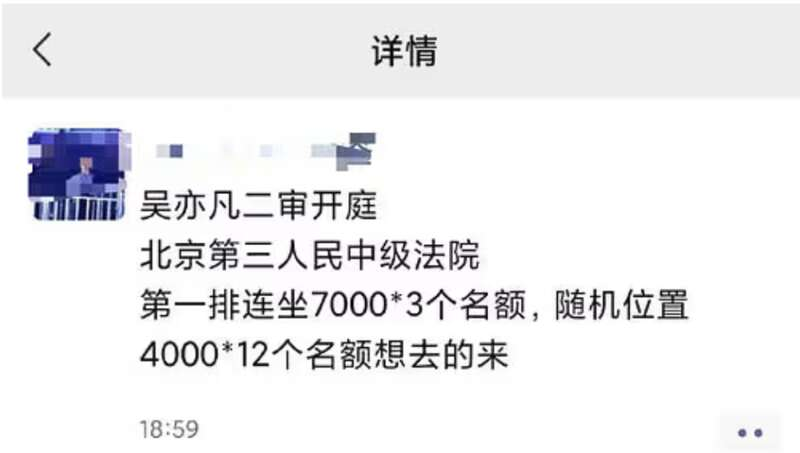
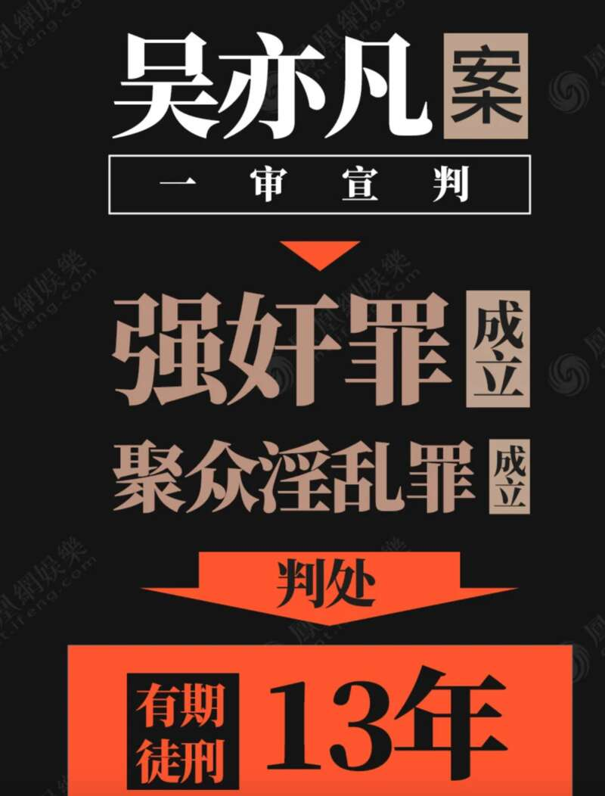
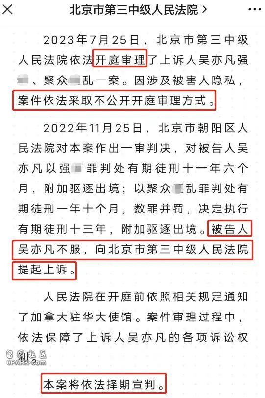
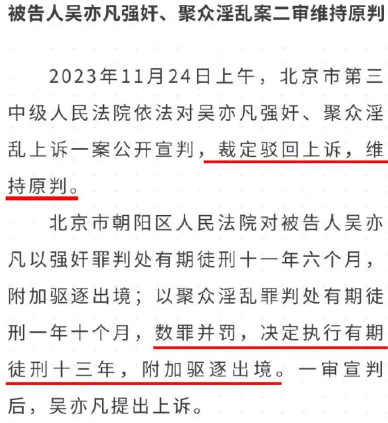

加拿大籍前顶流明星吴亦凡再次引发关注。
2021年，吴亦凡遭网红都美竹指控性侵未成年女生；2022年11月，他因强奸、聚众淫乱案，被判13年，附加驱逐出境！
都美竹掀开吴亦凡的桃色风暴图片来源：网络
最近，国内突然有“黄牛”在社交媒体上开卖“吴亦凡二审法院座位”，声称可付费买到旁听座位看偶像。
网上流传的截图称，吴亦凡案二审开庭，地点在北京第三人民中级法院，第一排连坐3个名额，售价1个座位7000人民币，另外随机位置1个4000人民币。
还有网友引用截图询问“有人送我去吗？”、“求打折票”、“这都有票务开始卖了”。还有网友留言称：“我真想要”。

不过，很快就有网友出声打假：“没点常识判断么？不能去搜下？二审去年都判完了还二审呢！”
“去年早就判了！”、“吴亦凡二审去年已经结束了，你在卖个啥！”
实际上，吴亦凡案二审早在去年11月就已判决出炉，法院裁定驳回吴亦凡的上诉，维持原判。
也就是说，维持了一审13年附加驱逐出境的判决。
2022年11月25日，北京市朝阳区人民法院对吴亦凡案作出一审判决：
对被告人吴亦凡以强奸罪判处有期徒刑十一年六个月，附加驱逐出境;以聚众淫乱罪判处有期徒刑一年十个月。数罪并罚，决定执行有期徒刑十三年，附加驱逐出境。
被告人吴亦凡不服，向北京市第三中级人民法院提起上诉。

2023年7月25日，北京市第三中级人民法院依法开庭审理了上诉人吴亦凡强奸、聚众淫乱一案，吴亦凡案二审开庭。

当时相关话题迅速冲上热搜，引发网友的热烈讨论。
据人民日报、新华社等媒体报道，因涉及被害人隐私，案件依法采取不公开开庭审理方式。
因为吴亦凡拥有加拿大国籍，法院在开庭前依照相关规定通知了加拿大驻华大使馆。案件审理过程中依法保障了上诉人吴亦凡的各项诉讼权利。

2023年11月24日，北京市第三中级人民法院依法对吴亦凡强奸、聚众淫乱上诉一案公开宣判，裁定驳回上诉，维持原判。

2024年，吴亦凡再次被点名，他犯案的详细细节也首次被披露。
今年1月23日，北京高院工作报告中总结了一些重大的案件，其中再一次提到了吴亦凡案。
工作报告中强调，吴亦凡案属于“严重犯罪典型”。
报告中还首次披露了吴亦凡犯案的细节，称吴亦凡于2018年7月1日在自己住所伙同他人组织另外两名女性酒后进行淫乱活动。2020年11月至12月之间，吴亦凡在其住所先后趁3名女性醉酒后不知反抗或不能反抗之际，强行与之发生关系。
也就是说，吴亦凡在两个月的时间里就犯案了三次，属于惯犯一枚。
值得注意的是，二审判决过后，吴亦凡其中一个品牌官方微博随即贴出吴妈妈的长文，称“我是吴亦凡母亲，我相信中国法律，即便二审结束，我依然会为儿子申诉。”
最近还有传言称，吴亦凡的母亲由于急需现金，试图以600万元人民币的价格出售一辆BRABUS G800豪车。
据称在卖车的介绍中仅提到是“某凡的车”，售车中介在描述时也只写：“某凡的车，对，就是他”。
总之，有关这位昔日明星的消息，每次曝出后都会收获很多转发和评论，引起舆论的巨大关注，但大家必须清楚这些消息是真是假，都尚未经过官方验证。
不过能确定的却是，如果不出意外的话，吴亦凡起码要等到2035年才能出狱，届时他已经45岁，被驱逐出境回加拿大之后，等待着他的，不知道又会是什么…